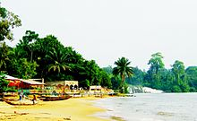
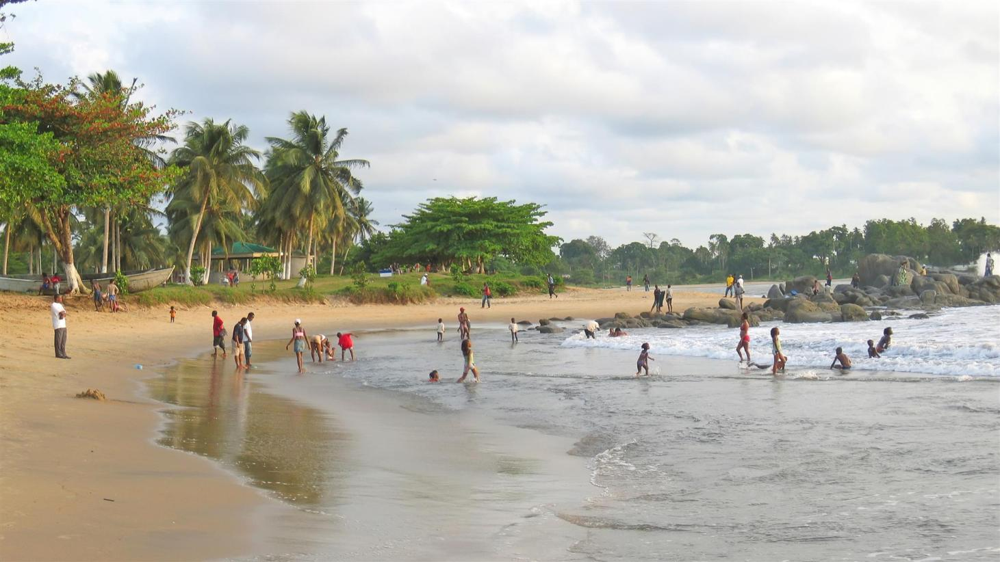
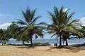

Visitez la région de Kribi au Cameroun
Au Cameroun, au cœur de l'Afrique, découvrez une région de nature spectaculaire, des cultures anciennes et des plages paradisiaques. Venez vivre votre aventure Africaine!
Localisation
 Kribi est une communauté urbaine1 du Cameroun située dans le département de l'Océan et la région du Sud. C'est une importante station balnéaire connue pour ses plages de sable blanc et son port.
Elle est un point stratégique du trafic maritime dans le Golfe de Guinée et le terminus de l'oléoduc transportant le pétrole brut depuis les champs pétrolifères de la région de Doba au sud-ouest du Tchad.
Les chutes de la Lobé sont également à proximité de la ville (7 km) et il y a une route intérieure, à travers la forêt littorale, jusqu'à Lolodorf.
Kribi est une communauté urbaine1 du Cameroun située dans le département de l'Océan et la région du Sud. C'est une importante station balnéaire connue pour ses plages de sable blanc et son port.
Elle est un point stratégique du trafic maritime dans le Golfe de Guinée et le terminus de l'oléoduc transportant le pétrole brut depuis les champs pétrolifères de la région de Doba au sud-ouest du Tchad.
Les chutes de la Lobé sont également à proximité de la ville (7 km) et il y a une route intérieure, à travers la forêt littorale, jusqu'à Lolodorf.
Lieux a ne pas rater
 Parmi les sites touristiques de la région de Kribi14, on compte le village de pêcheurs de Londji, baie au nord de Kribi de haute valeur écologique par la présence de mangroves et par sa proximité aux embouchures du Nyong et de la Lokoundje, le fleuve Lobé et ses chutes, les plages de Grand Batanga, le site éco-touristique d'Ebodjé, station de suivi des tortues marines, le parc national de Campo-Ma’an et les parages habités par les peuples pygmées Bagyeli-Bakola le long des routes de Bipindi-Lolodorf, notamment la colline de Bidjouka. Le projet de la Banque Mondiale « Filières de Compétitivité et Croissance » concerne la zone de Kribi depuis 2011 dans le but de valoriser certaines plages de Kribi et soutenir les activités d'habituation des gorilles dans le parc national de Campo Ma'an. Depuis 2003, il existe aussi un parcours de golf privé de neuf trous. La plupart des sites touristiques de Kribi sont gérés de façon non formelle par des jeunes locaux qui se lancent dans l'accompagnement des touristes, comme c'est le cas des chutes de la Lobé ou des plages aménagées de Grand Batanga, gérées par les groupes non structurés. Cela permet au voyageur d'avoir un contact direct avec les habitants, sans que l’insécurité soit à l’heure actuelle un problème majeur. En 2013, dans le cadre de la mise en application du projet « Tourisme côtier durable »15, le Ministère du Tourisme et des Loisirs16 lance l'initiative d’identifier avec des badges d’accompagnateur touristique local les personnes menant des activités touristiques afin de soutenir leur professionnalisation et reconnaître leur rôle. Un site web pour la promotion de l'écotourisme dans la zone de Kribi a été mis au point par le Ministère du Tourisme et des Loisirs du Cameroun en collaboration avec l'OMT et l'ONUDI14 dans le cadre du projet ST-EP pour le développement de l'écotourisme à Kribi 17de l'OMT.
sommaire
- Quelles sont les 7 merveilles du monde antique
- zone touristique
Sites touristiques
Réparties à travers le monde Hellénique, en Afrique du Nord et en Asie mineure, ce sont les grands voyageurs, artistes et érudits émerveillés par ces prodigieuses réalisations qui propagèrent leur légende. On doit à Philon de Byzance une première liste des sept Merveilles. Mais cette liste primitive évoluera au fil du temps, alimentée par différents auteurs. Finalement, la liste canonique compte les 7 Merveilles du monde antique suivantes . Ces œuvres, construites entre environ 2650 av. J.-C. pour la pyramide de Khéops et le début du IIIe siècle av. J.-C. pour le phare d'Alexandrie, se situent toutes autour du bassin méditerranéen.
zone touristique
 Parmi les sites touristiques de la région de Kribi14, on compte le village de pêcheurs de Londji, baie au nord de Kribi de haute valeur écologique par la présence de mangroves et par sa proximité aux embouchures du Nyong et de la Lokoundje, le fleuve Lobé et ses chutes, les plages de Grand Batanga, le site éco-touristique d'Ebodjé, station de suivi des tortues marines, le parc national de Campo-Ma’an et les parages habités par les peuples pygmées Bagyeli-Bakola le long des routes de Bipindi-Lolodorf, notamment la colline de Bidjouka. Le projet de la Banque Mondiale « Filières de Compétitivité et Croissance » concerne la zone de Kribi depuis 2011 dans le but de valoriser certaines plages de Kribi et soutenir les activités d'habituation des gorilles dans le parc national de Campo Ma'an. Depuis 2003, il existe aussi un parcours de golf privé de neuf trous. La plupart des sites touristiques de Kribi sont gérés de façon non formelle par des jeunes locaux qui se lancent dans l'accompagnement des touristes, comme c'est le cas des chutes de la Lobé ou des plages aménagées de Grand Batanga, gérées par les groupes non structurés. Cela permet au voyageur d'avoir un contact direct avec les habitants, sans que l’insécurité soit à l’heure actuelle un problème majeur. En 2013, dans le cadre de la mise en application du projet « Tourisme côtier durable »15, le Ministère du Tourisme et des Loisirs16 lance l'initiative d’identifier avec des badges d’accompagnateur touristique local les personnes menant des activités touristiques afin de soutenir leur professionnalisation et reconnaître leur rôle. Un site web pour la promotion de l'écotourisme dans la zone de Kribi a été mis au point par le Ministère du Tourisme et des Loisirs du Cameroun en collaboration avec l'OMT et l'ONUDI14 dans le cadre du projet ST-EP pour le développement de l'écotourisme à Kribi 17de l'OMT.